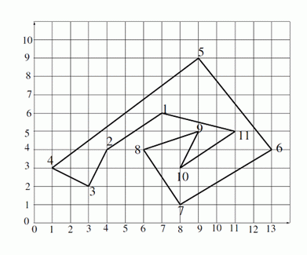

BZPRO
#2856. [ceoi2012]Printed Circuit Board
内存限制：128 MiB
时间限制：10 Sec
提交
提交记录
讨论
题目描述
给出一个
N
个顶点的简单多边形，对于每个顶点，假如它和原点连成的线段只在这个顶点处和多边形相交，就称为满足要求的顶点。你的任务是输出所有满足要求的顶点编号。

输入格式
第一行一个正整数
N
。下面
N
行每行两个不超过
10
6
的正整数，依次表示每个顶点的坐标。顶点按照输入顺序用正整数
1..
N
编号，并且顶点保证按照顺时针或逆时针顺序给出。
输出格式
第一行一个正整数
M
，表示满足要求的顶点个数。第二行
M
个正整数，按照升序给出满足要求的顶点编号。
样例
样例输入
11
7 6
4 4
3 2
1 3
9 9
13 4
8 1
6 4
9 5
8 3
11 5
样例输出
3
3 4 7
数据范围与提示
对于100%的数据满足：N ≤ 200,000。